My name is Benedetta, nice to meet you. I am a Designer based in Stockholm. I enjoy working between design and engineering. I am fascinated by user behaviour and data, I am an advocate of design thinking and user centred design.
I like prototyping, brainstorming and ultimately creating. In this portfolio you can get an idea of what I have done in the past years and what I enjoy doing in my day to day life. Let's have a chat!
Brief: During the COVID-19 pandemic social distancing became the norm and every activity was done through a screen. Haptic feedback is a powerful tool to simulate physical touch in many different ways. How to use haptic feedback to create a remote meaningful physical interaction?
Solution: A glove that allows two people to play rock-paper-scissors at a distance and uses haptic feedback to simulate the played action. task For the course Foundations of Interaction Technology we had to develop a prototype for an interactive at a distance touch interaction, using haptic feedback. The combination of sensors on the glove can detect which motion is made. The algorithm then decides who won and who lost. According to who won and with which action they won, a different vibration is activated, to simulate the hand of the opponent performing the action.
Tools used: Arduino for the electronics, processing for serial communication with the arduino and communication through internet.
Sensors and actuators used:
Capacitative sensor made with foil, flex sensor, three vibration motors and LEDs number of sensors to simulate a tic tac toe interaction at a distance.
Placement of actuators and sensors
Actions triggering sensors
Haptic feedback/Vibrations as a response to action
Prototype
Done in collaboration with Nicky Ter Maat, Arduino code can be found on my GitHub
Hoopa - Musical Pad
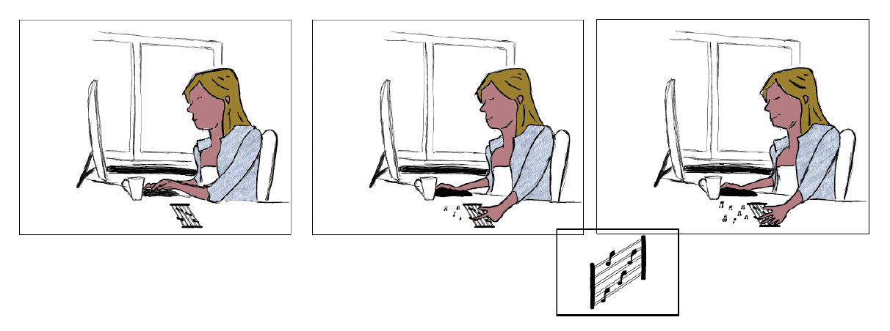
Brief: Fidgeting is a common human practice consisting in spontaneous body-movements, mostly performed with hands, which are used as an energy regulator or stress reliever. Research has shown that fidgeting interactions can be beneficial for multiple purposes. “How can fidgeting be incorporated into a portable musical device in a meaningful way?”
Method: Research Through Design - this methodology allows for a high degree of exploration, experimenting and executing research by designing.
Solution: A portable music pad that matches tapping and rolling movements to sounds and music.
Tools used: Arduino Nano, Processing
Sensors used:
Capacitative sesors made with conductive fabric, gyroscope.
Phase 1 - Bodystorming
We used bodystorming techniques to explore fabrics and how different fabrics felt to the touch. What came out of the body storm was the contrast of soft and hard and the feeling of patterns on fabric. Initially we wanted to look into incorporating conductive fabric within a softer fabric, but the feel of the conductive fabric versus the felt offered a drastic pattern change so we decided to juxtapose them instead.
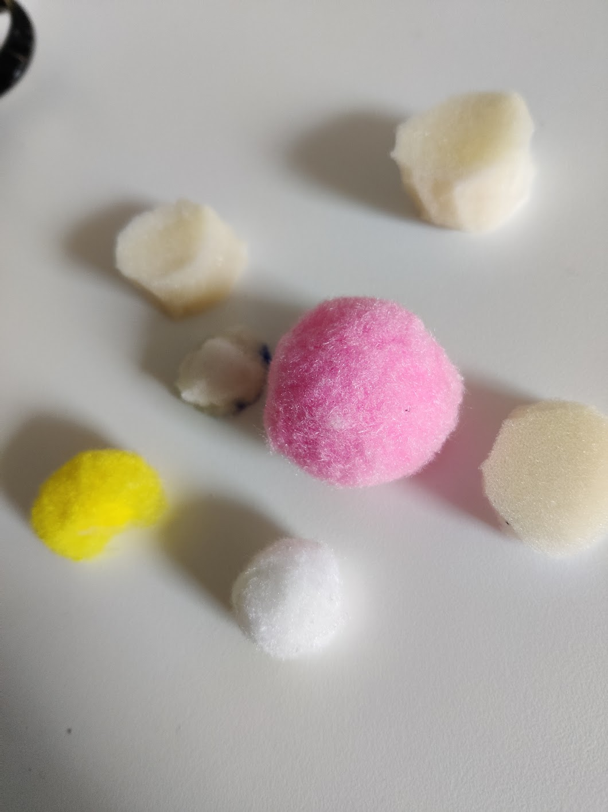
Phase 2 - First Iteration
One pad with different size felt balls - when touched the felt balls would make different, random sounds.
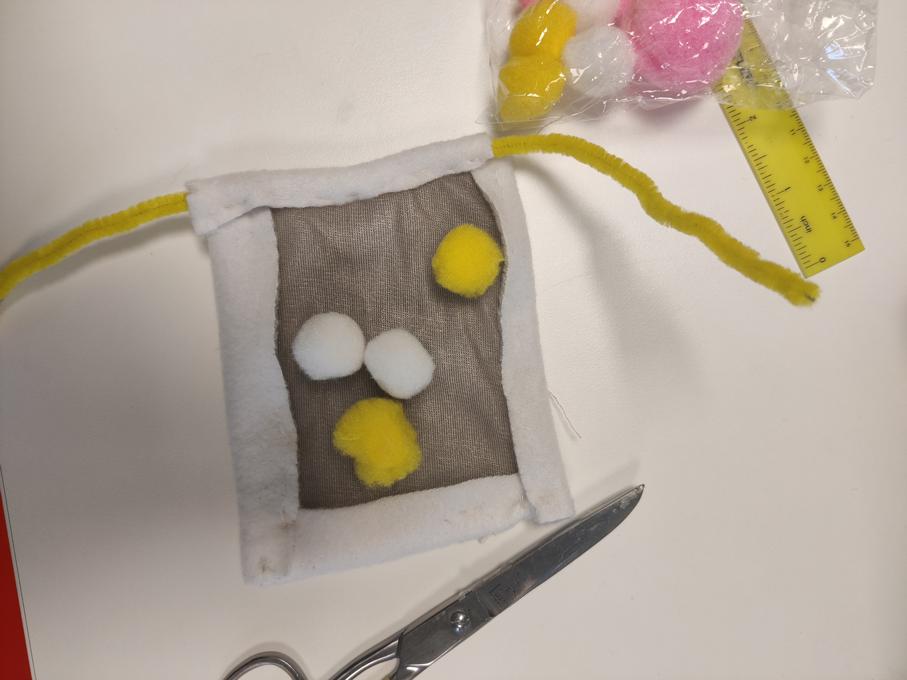
Phase 3 - Cafè Study
During the cafe study we discovered that users found it unnatural that the sounds were random, instead of squeezing the balls they tapped it and they rolled the mat.
Phase 4 - Final iteration: We decided to connect specific actions to sound and explored that further by creating separate strips
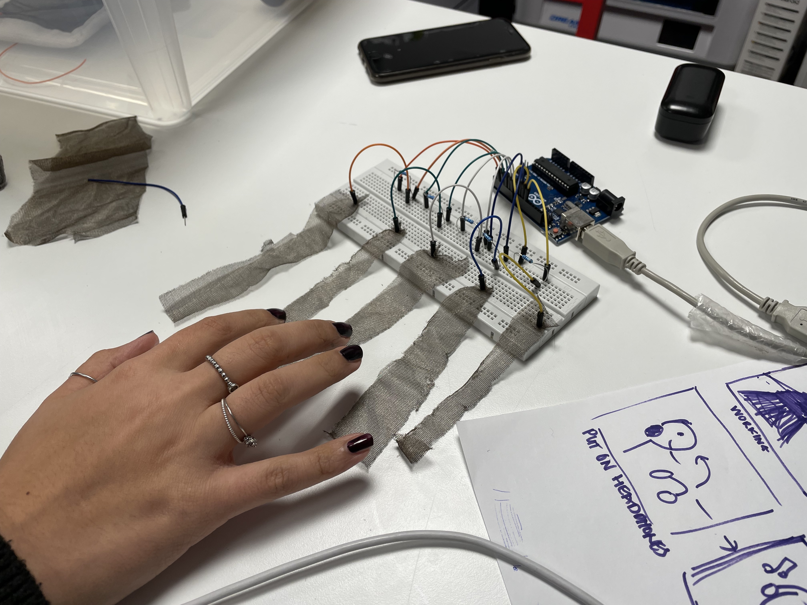
We then put the buttons to the side and matched strips to sounds
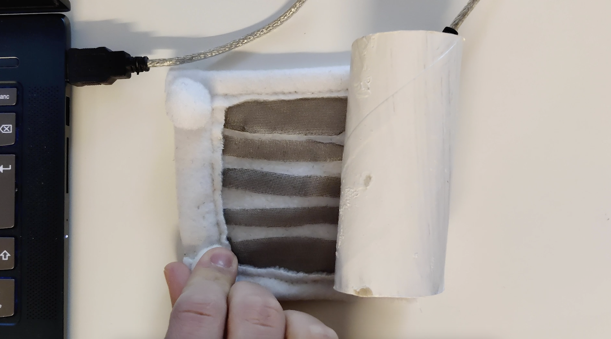
And added a gyroscope in the tube on the side to allow for a sound to be created when the pad was rolled
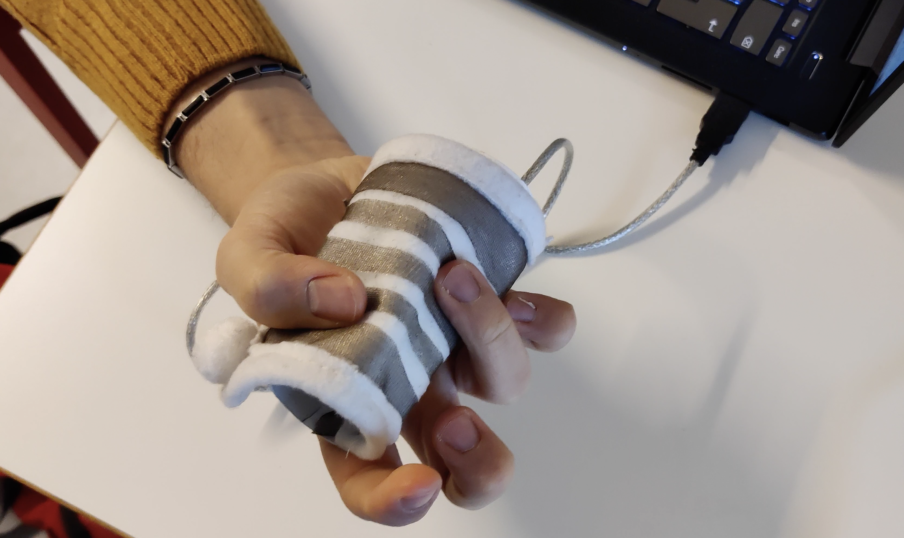
In collaboration with Francesco Di Flumeri and Billy Jansheden
Brain to the Future - Gogbot
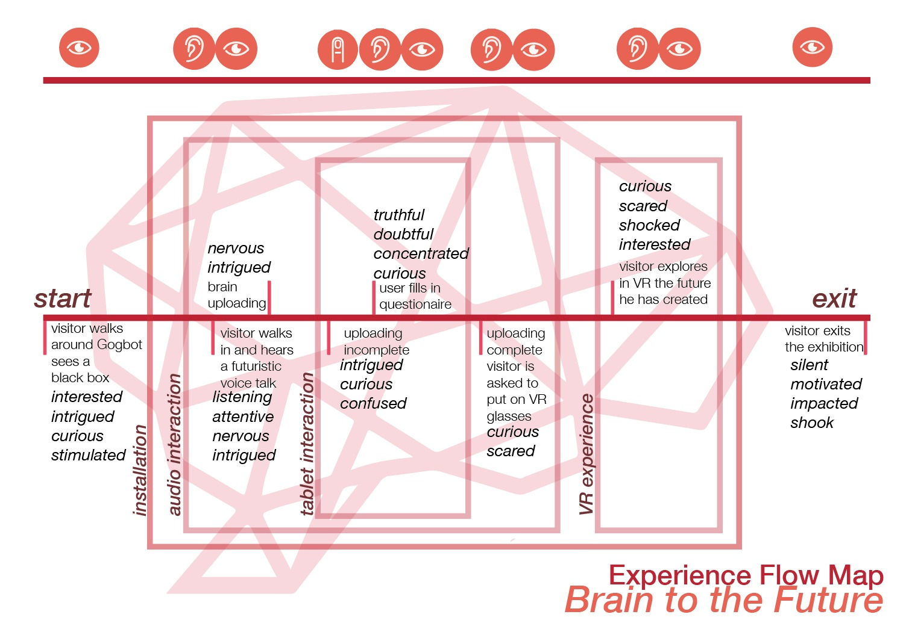
For the 2018 edition of the Art Music and Technology festival Gogbot, we developed a VR installation that aimed at showing our impact of our choices on our future and the world. This was developed using Unity. I primarily focused on the Unity communication with the Oculus Rift. Done in collaboration with: Anne Biggelaar, Amber Eggengoor, Charlotte van Doorn, Thomas Rebel, Hester Van de Ven, Frederique Volskeuil
Jumbo Supermarkets - Interactive Experience
Brief: The Jumbo Supermarket in Goor is, as of 2021, the most sustainably built supermarket in Benelux. They offer next to their normal stock a variety of locally sourced, organic products. Jumbo wants to communicate and highlight the sustainability and locally-sourced aspect even more in their building towards the clients, especially the younger ones.
Solution: An interactive multi-sensory experience aimed at young children that do groceries with their parents.
The experience: Highlights the process of the production of the products that are sold in the supermarket Allows the children to experience production first hand through a number of interactive installations.
Client research: Jumbo Supermarkets
It's important to know the context in which you're designing and the client you're designing for, so we individually visited a supermarket nearby and map our experience and observed behaviors.
And then collectively went into the Jumbo supermarket in question to see how they were engaging with kids and to understand the physical space better.
Challenges: Designing with limited resources during a pandemic
As we had no access to children to interview and understand we had to put ourselves in their shoes. Also the restrictions implied spending limited time in public spaces. We used a Digital/Virtual Twin: a VR Recreation of the supermarket.
Storyboarding
Storyboard of Jumty the Elf
Done in collaboration with: Niels van Dalen, Martijn Poot, Yihzen Ria, Suri Chen
Data Visualisations for RTL Nederland
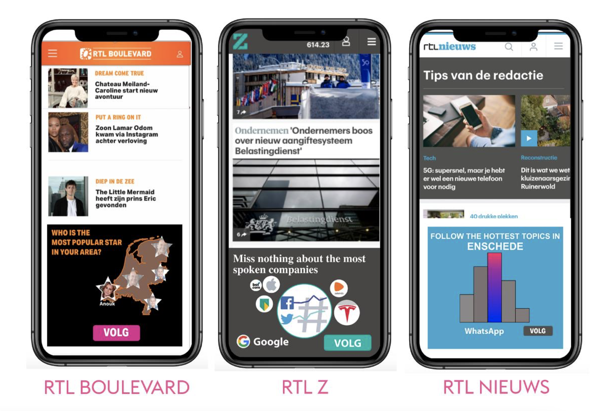
I worked on a data visualisation project at RTL Nederland. I developed a number of data visualisations for the RTL news websites. My aim was to raise visibility of the "follow" function through the use of innovative visualisations based on the news data as well as user data. One of the visualisations was also live on the rtl boulevard site, showing a positive trend in the use of the "follow" function. You can download my thesis here
Sports Data Physicalisation
Brief
This is a data physicalisation based on sporters physiological data compared to the user's data. Three arcade style interactions show the reaction speed, strenght and lung capacity of the user compared to famous olympians using innovative ways to physicalise data such as a pinball machine or racing cars.
Reaction Speed, Strenght and Lung Capacity
Electronic Schematics
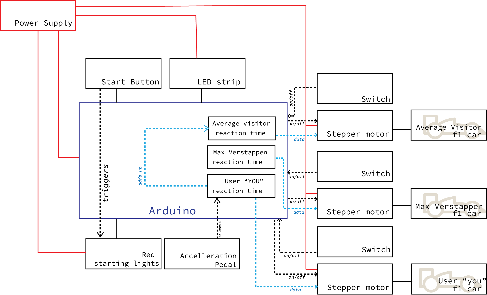
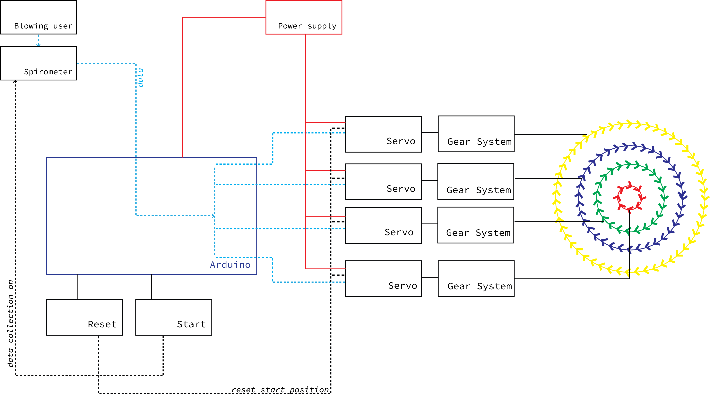
In collaboration with: Ale Blauw, Carlijn Rendering. Emma Brouwer, Femke Jansen, Hannah Ottenschot, Hessel Bosma, Karlijn Wiggers, Maartje Huveneers, Manouk Hillebrand, Rezfan Pawirotaroeno, Shifra Barneveld, Sophie Kroezen, Thijs Wittendorp, Wouter Couwenbergh
Rock Paper Scissors
For the course Foundations of Interaction Technology we had to develop a prototype for an interactive at a distance touch interaction, using haptic feedback. This project uses Arduino, Processing and a number of sensors to simulate a tic tac toe interaction at a distance. The combination of flex sensor and capacitative sensor can detect which motion is made. The algorithm then decides who won and who lost. According to who won and with which action they won, a different vibraiton is activated, to simulate the hand of the opponent performing the action.
In collaboration with Nicky Ter Maat
Rock Paper Scissors
For the course Foundations of Interaction Technology we had to develop a prototype for an interactive at a distance touch interaction, using haptic feedback. This project uses Arduino, Processing and a number of sensors to simulate a tic tac toe interaction at a distance. The combination of flex sensor and capacitative sensor can detect which motion is made. The algorithm then decides who won and who lost. According to who won and with which action they won, a different vibraiton is activated, to simulate the hand of the opponent performing the action.
In collaboration with Nicky Ter Maat
Rock Paper Scissors
For the course Foundations of Interaction Technology we had to develop a prototype for an interactive at a distance touch interaction, using haptic feedback. This project uses Arduino, Processing and a number of sensors to simulate a tic tac toe interaction at a distance. The combination of flex sensor and capacitative sensor can detect which motion is made. The algorithm then decides who won and who lost. According to who won and with which action they won, a different vibraiton is activated, to simulate the hand of the opponent performing the action.


 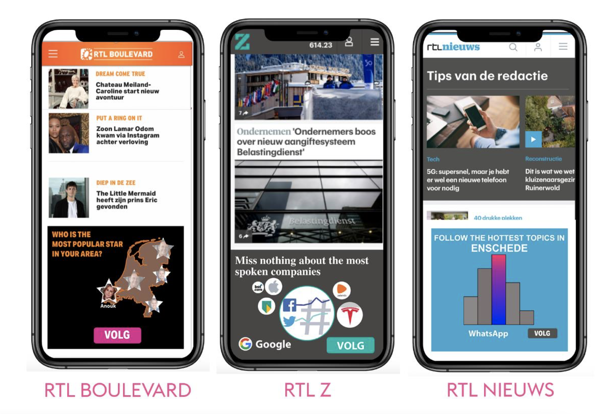
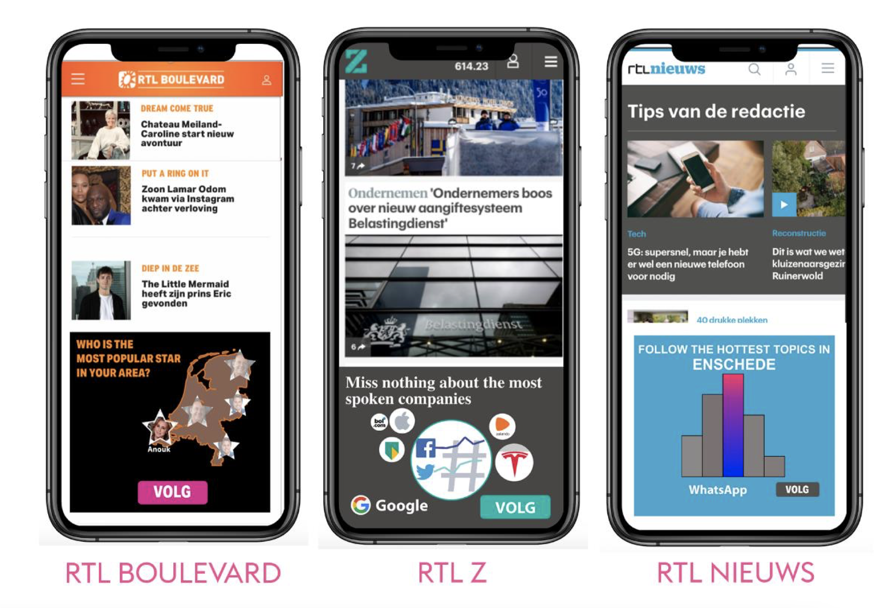